ECON 2316 • Microeconomic Theory • Chapter 13 • Part 1
Monopolistic Competition
Chapter 11 had one firm. Perfect competition (Ch 10) had a faceless crowd. Real markets — coffee, pizza, craft beer, software — live in between: many firms, each selling a product that is almost like the others, with the door wide open for the next entrant.
Dr. Richeng Piao
Department of Economics
Northeastern University
Learning Objectives
By the end of Part 1 you will be able to…
1
Characterize monopolistic competition by its four defining features and locate it on the market-structure spectrum. (L2)
2
Explain product differentiation as the engine of a downward-sloping perceived demand curve. (L2)
3
Solve the short-run problem \(MR_i(q_i) = MC(q_i)\) on perceived demand — the Ch 11 monopoly rule, now with a rival next door. (L3)
4
Derive the Chamberlin long-run tangency as a calculus condition — matched value and matched slope — and show entry drives profit to zero. (L4 — central result)
5
State and apply the excess-capacity theorem and weigh the variety-vs-efficiency tradeoff. (L4)
From Platform to Sellers — Airbnb’s Two Sides
SELLER SIDE
THE PLATFORM
BUYER SIDE
Hosts
over 5 million hosts
listings · fees
Airbnb
matches the two sides
bookings · fees
Guests
2.5 billion arrivals since 2007
Airbnb is a Chapter 12 network. More hosts bring more guests, and more guests bring more hosts. So only a few big platforms survive, and they charge fees to both sides.
Each host sets their own price. Every listing is different: location, photos, star rating, a hot tub. A host can charge a little more and still keep most guests.
But competition still limits them. Dozens of similar listings sit nearby, and anyone can list a room. Charge too much and guests switch.
So what happens to a host’s economic profit?
Short run: a better listing can earn some. Long run: new hosts copy it and enter, and economic profit goes to zero. Some control over price, no lasting profit: that is monopolistic competition.
Market Structure Analysis — Four Structures
Perfect Competition
Ch 10
Firms: many
Product: identical
Barriers: none
corn, wheat
Monopolistic Competition
Ch 13 · Part 1
Firms: many
Product: differentiated
Barriers: none
coffee shops, burger places
Oligopoly
Ch 13 · Part 2
Firms: few
Product: differentiated or identical
Barriers: some
soda, airlines, phones
Monopoly
Ch 11
Firms: one
Product: unique
Barriers: many
tap water, the power lines
Most of what we buy every day comes from the middle. Middle-left: coffee shops, restaurants, hair salons, apps. The US has over 1 million restaurant locations, and more than 7 in 10 are single-unit businesses. Middle-right: phones, airlines, soda. Four airlines fly about 70% of US domestic air travel.
Allbirds — From \$4.1B to \$39M
A wool sneaker that was different, at \$95 a pair. What was that difference worth?
2021 · the difference pays. At its IPO, Allbirds is worth about \$4.1 billion.
Easy to copy. Amazon sells a \$45 wool lookalike of the \$95 shoe. On and Hoka win the comfort buyer.
Buyers leave. Revenue falls from \$297.8M (2022) to \$152.5M (2025).
2026 · sold for \$39 million, under 1% of the 2021 value.
Allbirds’ value, to scale
\$4.1B
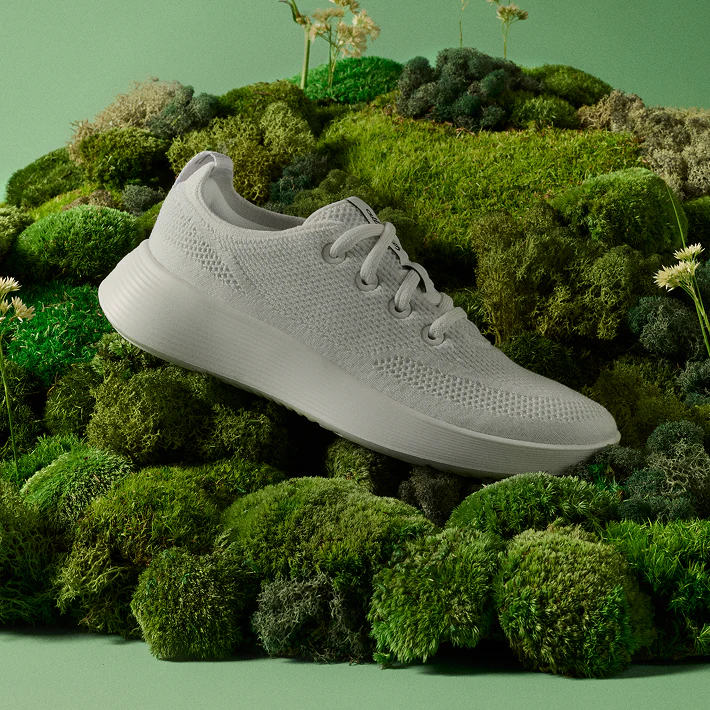
\$39M
NOT JUST ALLBIRDS: DUPES COPY THE DIFFERENCE
Lululemon Define jacket \$128; Costco’s lookalike about \$22. Lululemon sued in 2025.
Dyson Airwrap about \$600; Shark FlexStyle about \$280, half the price.
27% of US adults bought a dupe on purpose (2025); about half of Gen Z.
If a difference is easy to copy, it does not protect profit. Copies enter, buyers move, and profit shrinks. Walkthrough 13.1 shows it with the model.
§13.2 · LO 1–2
What Is Monopolistic Competition?
Many firms, similar-but-different products, easy entry
What Is Monopolistic Competition — Sam’s Burgers
Sam’s Burgers again: the same burger street, three ways. Watch the demand curve one shop faces:
Ch 9–10 · Perfect competition
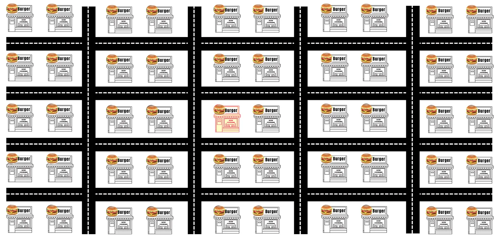
Sam is one of about 50 shops within 3 miles selling the same basic cheeseburger. A price taker: flat demand.
Ch 11 · One shop differentiates
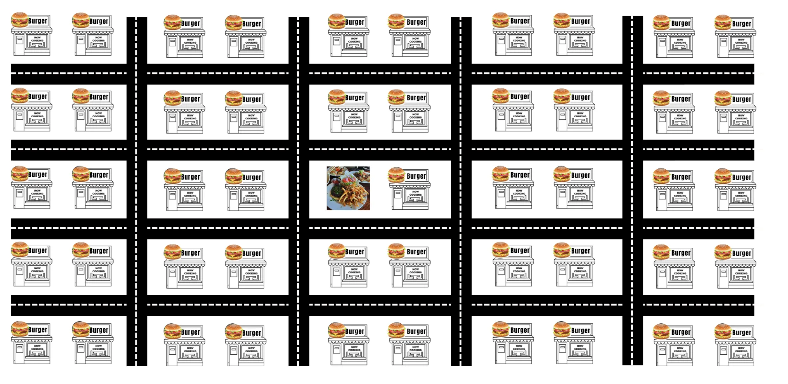
Fifty near-identical joints, until one differentiates. That shop wins a local monopoly: a steep demand of its own.
Ch 13 · Monopolistic competition

Every shop differentiates a little, and entry stays free. Sam’s demand slopes down; raise the price and he loses some customers, not all.
Monopolistic competition: many firms sell differentiated products (close substitutes, not perfect ones), and entry and exit are free.
“Monopolistic” = Sam’s own demand slopes down. “Competition” = many rivals and an open door, so long-run profit goes to zero.
Why Entry Is Free — Anyone Can Open a Burger Place
1. Many sellers
About 50 burger places within 3 miles of campus. None sets the market price.
2. Differentiated
Sam’s smash burger is not Moonshine 152’s \$20–30 plate: close substitutes, not perfect ones.
3. Free entry & exit
Lease a storefront, rent a griddle (\$50 a day in Sam’s Ch 9 costs), hire cooks. Closing is just as easy.
4. Independent decisions
Sam runs a special; the other 49 do not call a meeting. No strategy needed (that is oligopoly, Part 2).
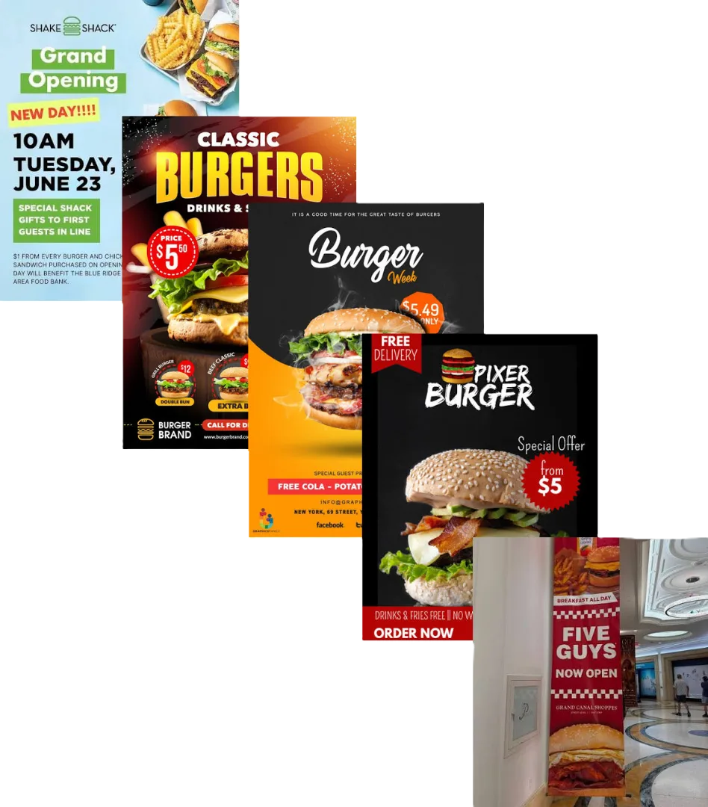
Entry: grand openings
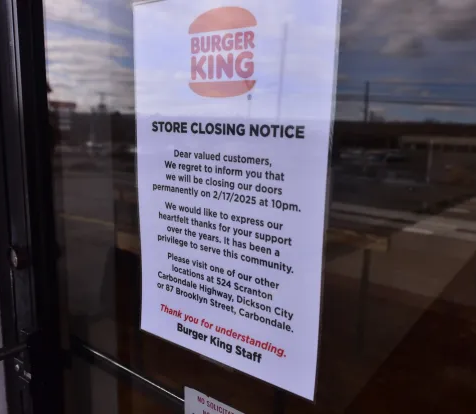
Exit: a closing notice
Differentiation is a soft entry barrier. Sam’s edge is a recipe, a look and a name. A recipe that is a list of ingredients cannot be copyrighted, so nothing stops the next shop from copying his smash patty. A soft barrier slows entry; it does not stop it.
Differentiation buys Sam a downward-sloping demand curve, not a wall. Free entry is the force that will take his profit away.
How Firms Differentiate — A Quick Recap
Four ways we have already seen a firm make its product not quite the same as its rivals’. One example each from Sam’s Burgers and an Airbnb listing:
Location
Across the street from the dorms.
A five-minute walk to Fenway.
Quality & features
Beef ground fresh every morning.
A full kitchen and free parking.
Branding
A name and logo students recognize.
A Superhost badge and a 4.9★ rating.
Service
Late-night delivery.
The host replies within an hour; self check-in.
All four do the same thing: buyers see fewer close substitutes, so the firm’s demand is less elastic and it can price above marginal cost.
New: advertising. The burger and the apartment do not change at all. The ad changes what buyers know about them, or how they feel about them.
Poll — How Many Ads Do You See a Day?
Count every ad a typical American runs into in one day:
About how many ads does a typical person actually see in a day?
Does a logo on a T-shirt count? The badge on a car? You decide.
60 sec to vote then ↓ for the answer
Answer: B — Hundreds of Ads, Thousands of Logos
The big number depends on what you count. A YouTuber who counted every logo and every car hit 4,580 in his first three hours and passed 10,000 in a day. Count paid ads only, and it is a few hundred.
Ads are plentiful; attention is scarce. Only about 150 ads a day get noticed, so firms compete for attention, and a slot where millions are truly watching is worth a lot.
Poll — Why Pay \$8 Million for 30 Seconds?
125.6M
U.S. viewers, Super Bowl LX (Feb 2026)
\$8M
average price of one 30-second spot
2 spots
bought by Genspark, an AI startup just over two years old
Why would a young startup pay about \$8 million for 30 seconds of airtime?
60 sec to vote then ↓ for the answer
Answer: A, B, C — Two Views of Advertising
View 1: ads inform (A). Buyers learn what exists and what it costs, so they compare. Demand gets more elastic; prices fall. Eyeglasses cost about 25% more in states that banned ads (Benham, 1972).
The spend is the signal (B). The ad can say almost nothing. Ads win first-time buyers; only a good product brings them back. Only a firm expecting repeat buyers can earn back \$8M (Nelson, 1974).
View 2: ads persuade (C). Loyal buyers see rivals as worse substitutes. Demand gets less elastic, so the markup rises: \(L = -1/\varepsilon\).
Which view wins is an empirical question, and both buy the same scarce thing: attention. D is not a business reason. And a signal is not proof: FTX ran a Super Bowl ad in Feb 2022 and was bankrupt by Nov 2022.
The Software Paradox
Garage Entry
Anyone can write code on a laptop. Entry barriers are almost zero.
Premium Subscriptions
Yet leaders charge $45–$165 / user / mo — and keep their customers.
| Salesforce | HubSpot | |
|---|---|---|
| Target | Large enterprises | Small & mid-size firms |
| Strategy | Deep customization & ecosystem | Ease of use, all-in-one |
| Pricing power | ~$165 / user / mo | ~$45 / user / mo |
Near-zero entry cost, near-zero marginal cost — yet no commodity price war. The resolution is the engine of this whole chapter: differentiation. Each firm owns a distinct slice and holds its price.
From Price Taker to Price Maker
Price Taker
The market sets the price; demand is flat, \(P=MR=MC\).
Wheat farmer — perfect competition (Ch 10)
Algorithmic Extractor
The platform's code sets the price, capturing surplus on both sides.
Rideshare dynamic pricing (our case study)
Differentiated Maker
Your variety sets the price; perceived demand \(P_i^{d}(q_i)\) slopes down, \(P>MC\).
Ciao, Salesforce, HubSpot — monopolistic competition
The neutral invisible hand recedes left to right: the more a firm differentiates, the more it sets its own price. Monopolistic competition is the honest right-hand column — a genuine sliver of power that free entry keeps thin.
§13.2 · LO 3
Short-Run Profit Maximization
One Airbnb host sets its own nightly price: \(MR = MC\), then read profit off ATC
One Airbnb Host — A Price-Setter With Many Rivals
The listing
Jordan’s private room
★ 4.9 · Superhost
Queen bed, desk, fast Wi-Fi
Self check-in, free parking
Spotless, quick replies
The rivals: dozens of similar rooms nearby, about ★ 4.7, no extras.
1 · Differentiated. Stars, the Superhost badge (a 4.8+ rating, at least 10 stays, under 1% cancellations, 90% of messages answered within 24 hours), a nicer room, extras. No two listings are the same.
2 · Its own downward-sloping demand. Raise the nightly price by \$20 and some guests book a similar room instead, but not all. Jordan sets the price.
3 · Many sellers, easy entry. Anyone with a spare room can list it in an afternoon, and leave just as fast. A profit will not stay private for long.
The model · per month · \(Q\) = nights booked (at most 30)
Demand after the upgrade: \(P = 420 - 10Q\) · Fixed cost \$1,200 (the room’s share of rent, furniture, insurance)
Marginal cost \(MC = 30 + 6Q\) (cleaning and supplies, plus wear and Jordan’s time) · \(ATC = \dfrac{1200}{Q} + 30 + 3Q\)
Stylized numbers, chosen to keep the arithmetic clean.
Short Run — Better Service Earns Economic Profit
1 · Demand: \(P = 420 - 10Q\). The upgrade and the reviews put Jordan’s demand high.
2 · Marginal revenue: \(MR = 420 - 20Q\), twice as steep. To fill one more night, Jordan cuts the price on every night.
3 · MC and ATC: \(MC = 30 + 6Q\) cuts the U-shaped ATC at its bottom: 20 nights, \$150.
4 · MR = MC: \(420 - 20Q = 30 + 6Q\), so \(Q^{*} = 15\) nights. Go up to demand: \(P^{*} = \$270\).
5 · Profit: \(ATC(15) = 80 + 30 + 45 = \$155\). \((270 - 155) \times 15 = \mathbf{\$1{,}725}\) a month of economic profit.
Poll — Jordan Earns Profit. What Happens Next?
Jordan’s upgraded room earns \$1,725 a month in economic profit. Anyone can list a room, and anyone can buy a desk and a self check-in lock. What does the model predict over the next year?
60 seconds to vote · then press ↓ for the results
Answer: B — Copying and Entry Erase the Profit
Economic profit is a signal. Each rival that copies the desk and the self check-in, and each new room that lists, takes a few of Jordan’s guests. Jordan’s demand shifts left and gets flatter, until \(P = ATC\).
Not A: stars are differentiation, not a barrier; rivals can earn stars too. Not C: Jordan is already at \(MR = MC\); a higher price earns less. Not D: fees are a cost of doing business; they do not explain why the profit disappears.
§13.2 · LO 4
Long Run — Entry Erases the Profit
Other hosts copy the upgrade until the host’s demand just touches ATC
Long Run — Rivals Copy, Profit Goes to Zero
Start: only Jordan has the upgrade: 15 nights at \$270, profit \$1,725 (dotted \(D_0\) from here on).
1 · Copying and entry. Each copycat or new room takes some of Jordan’s guests: demand shifts left and gets flatter. Halfway: 12.6 nights, \$225.30, profit \$784.50.
2 · Entry stops at the tangency. \(D_1: P = 270 - 9Q\) just touches ATC at 10 nights: \(P = ATC = \$180\). Profit \$0.
3 · Still MR = MC. \(MR_1 = 270 - 18Q\) meets \(MC = 30 + 6Q\) at the same 10 nights, both \$90. The best Jordan can do now is break even.
Zero economic profit is not failure. \$180 a night still pays the rent share, the cleaning and a normal return on Jordan’s time: as much as the next-best use. Only the extra profit is gone.
Evidence — Entry Competes Away the Gains
Uber drivers after a fare increase
Each trip pays more, so hourly earnings jump. Then drivers work more hours: a 10% fare rise cuts the share of time with a passenger by about 7%. After about 8 weeks, hourly earnings are back where they started.
Sketch of the result. Hall, Horton & Knoepfle, NBER WP 30883 (2023): 36 US cities, 2014–2017.
Airbnb hosts as listings poured in
In 2023, available nights grew 12.8% but booked nights only 6.7%: occupancy fell to 54.8% and revenue per available night fell 4.9%. Then entry slowed.
AirDNA, 2024 Outlook (Dec 2023) and 2025 investment report (Jan 2025).
So what do drivers take home? Not much. A study for the City of Seattle put net pay at about \$9.73 an hour after car costs (pre-2020 data), below the city’s \$16.39 minimum wage; an Uber- and Lyft-funded study said \$23.25. Either way, a higher fare does not raise it for long: entry competes the gain away.
Calculus Corner — Tangency as a Calculus Condition
At the long-run free-entry equilibrium output \(q^{\ast}\), two equations hold:
\(P^{d}(q^{\ast}) = ATC(q^{\ast})\) (matched value)
\(\dfrac{dP^{d}}{dq}\Big|_{q^{\ast}} = \dfrac{dATC}{dq}\Big|_{q^{\ast}}\) (matched slope)
Why matched slopes? At the entry margin, perceived demand cannot cross ATC — a crossing would leave a range of outputs with \(P^{d} > ATC\) (positive profit), inviting more entry. It can only touch. Tangent curves share a slope.
The decisive contrast. In perfect competition the firm's demand is flat, so it is tangent to ATC at its minimum, where \(dATC/dq = 0\). There \(P = MC = \min ATC\).
In monopolistic competition \(dP^{d}/dq < 0\), so the matched slope is negative — tangency lands on the falling branch of ATC, left of \(\min ATC\). That gap is the excess capacity, derived in one line.
Combine with \(MR_i = MC\): since \(MR_i < P^{d} = ATC\), we get \(MC < ATC\) and \(P > MC\). The markup and the excess capacity fall out of the same two equations.
§13.2 · LO 5
Excess Capacity & the Markup
Zero profit, yet empty nights and a price above MC: the price of variety
Excess Capacity — Jordan’s Empty Nights
1 · Cheapest scale. Lowest ATC: 20 nights, \$150, where MC crosses it.
2 · Long run. Jordan books 10 nights at \$180, on the falling side of the U.
3 · Excess capacity: 20 − 10 = 10 nights a month left unfilled.
4 · Why not fill them? More nights means a lower price on every night: past 10 nights \(MR_1\) is below MC. A downward-sloping demand can only touch the U on its falling side.
Check: slope of \(D_1\) is \(-9\); slope of ATC at 10 is \(-1200/10^2 + 3 = -9\). Same slope, so they touch.
5 · Why \$180, not \$150? The same \$1,200 fixed cost (rent share, furniture, decor) spread over half the nights.
Heads up: empty capacity is normal here, not failure: coffee shops with empty tables at 3 pm, gas stations with idle pumps, salons with empty chairs. Each covers its costs; buyers pay a little more for many different, nearby choices.
The Markup — P Above MC, Yet Zero Profit
1 · MR = MC: \(270 - 18Q = 30 + 6Q\) at 10 nights, so \(MC = \$90\).
2 · Price from \(D_1\): \$180. Markup \$90. Lerner: \((180 - 90)/180 = 0.5 = 1/|\varepsilon|\), with \(\varepsilon = -2\).
3 · Yet profit is \$0: \(P = ATC = \$180\). Markup compares price with marginal cost; profit compares it with average cost.
4 · Deadweight loss, as in monopoly: guests who value a night between \$90 and \$180 do not book. Triangle: \(\tfrac12 \times (180 - 90) \times (16 - 10) = \$270\) a month.
Markup and empty nights are what variety costs. Jordan’s room is not the next room over; guests pay a little more, and book a little less, for the room that fits them.
§13.2 · Wrap-up
Monopolistic Competition in Action
The cycle, everywhere you look — then on to oligopoly
Walkthrough 13.1 — Allbirds, From Profit to Zero
Problem. Stylized numbers, not Allbirds’ books: \(Q\) in thousand pairs a month, \(P\) in \$ a pair. Cost \(C = 1{,}600 + 20Q + 0.25Q^2\), so \(MC = 20 + 0.5Q\). Before copycats, Allbirds’ demand is \(P = 145 - Q\); after they enter, \(P = 100 - 0.75Q\). Find \(Q\), \(P\) and profit in each.
1 · Short run. \(MR = 145 - 2Q = 20 + 0.5Q\) gives \(Q = 50\), \(P = \$95\): the Wool Runner price.
2 · Profit. \(ATC(50) = 32 + 20 + 12.50 = \$64.50\). Profit \(= (95 - 64.50) \times 50 = \$1{,}525\)K, about \$1.5M a month.
3 · Copycats enter. Amazon’s \$45 lookalike, On, Hoka. Demand shifts left and gets flatter: elasticity at the optimum \(-1.9 \to -2.33\).
4 · Long run. \(MR = 100 - 1.5Q = 20 + 0.5Q\) gives \(Q = 40\), \(P = \$70 = ATC(40)\). Demand just touches ATC: profit \(= 0\).
5 · Still \(P > MC\) (\$70 vs \$40), and 40 < 80, the bottom of ATC: excess capacity. One more copycat pushes demand below ATC: losses, then exit. Allbirds went there and sold for \$39M.
Chapter 13, Part 1 — The Five Results
The structure. Many firms, differentiated products, free entry, independent decisions. Differentiation is the boundary with perfect competition; independence is the boundary with oligopoly.
Short run. Differentiation bends demand down, so \(MR_i < P\). The firm maximizes at \(MR_i = MC\) and prices off \(P^{d}\), leaving \(P > MC\) — the Ch 11 rule on the firm's own perceived demand.
Long run. Free entry drives economic profit to zero at the Chamberlin tangency: matched value \(P^{d} = ATC\) and matched slope \(dP^{d}/dq = dATC/dq\).
Excess capacity. A downward line tangent to a U must touch on the falling branch, so \(q^{\ast} < q_{\min ATC}\) — excess capacity and a persistent markup, together.
The trade-off. Firms differentiate on location, branding, packaging, quality, service, and advertising. The markup and the idle capacity are the price of variety — net welfare is ambiguous (Spence; Dixit–Stiglitz; Mankiw–Whinston).
One spine. Zero economic profit, a positive markup, and excess capacity all hold at the same point. They feel contradictory only until you see that one downward-sloping curve tangent to one U-shaped curve forces all three at once.
Chapter 13, Part 1 — complete
Questions?
Next: Chapter 13, Part 2 — Oligopoly. Drop characteristic #4, independence. Make a few firms watch each other and you get strategic interaction: Cournot, Bertrand, Stackelberg, and the cartel bound.
Where Ch 13 Sits on the Spectrum
Chs 11–12 — one firm
A single price-maker, markup pinned by its own elasticity: \(L = (P-MC)/P = -1/\varepsilon_D\). No rival to worry about.
Ch 13 — many firms, free entry
Each firm keeps a sliver of that power from differentiation — but free entry competes the profit away. Today: the left half of the gap.
Part 1 fills the slot just right of perfect competition: keep the crowd and free entry, add differentiation. Part 2 fills the slot just left of monopoly: a few firms who must watch each other. Over 90% of what you buy lives in today's slot.
Two Everyday Markets, One Structure
Coffee. One Cambridge block: three coffee shops, a sandwich franchise, and an empty storefront where a fourth just closed. None a monopoly, none a price-taker — each keeps a loyal core and charges a little above cost.
Beer. 9,578 US craft breweries in 2025 — yet 481 closures against 300 openings, a second straight year closures outnumbered openings. Anchor Brewing (est. 1896) closed in July 2023.
9,578
US craft breweries (2025)
481
closed in 2025
300
opened in 2025
−181
openings − closures (2nd year negative)
Coffee and beer are both monopolistic competition: many differentiated firms with free entry and exit. Differentiation lets each charge \(P > MC\); free entry competes that profit away toward zero economic profit in the long run — the slot just right of perfect competition that Part 1 makes precise.
Four Defining Characteristics
1. Many sellers
A large number of firms, each with a small share. No one sets the market price.
2. Differentiated products
Close substitutes, not perfect ones. The feature that separates this from perfect competition.
3. Free entry & exit
No patents or capital walls. A new oven fires up in a vacant storefront within months.
4. Independent decisions
Too many rivals to track — no firm reacts to any single competitor. Unlike oligopoly (Part 2).
#2 (differentiation) is the boundary with perfect competition; #4 (independence) is the boundary with oligopoly. Those two lines define the slot.
Heads Up — “many sellers” does not by itself mean perfect competition
Ch 10 needed many sellers and an identical product. Drop only the second and you land here: the count of firms is unchanged, but each faces a downward-sloping perceived demand. On an exam, never infer \(P = MR\) from firm count alone — check whether the product is homogeneous.
#1 Many Sellers — Pizza Near Campus
Search “pizza near Northeastern” on Google Maps. You’ll find roughly 50 options within a six-mile radius.
No single shop dominates. Each competes for the same pool of hungry students, but none controls enough of the market to set the price.
That’s “many sellers” — the trait MC shares with perfect competition. Yet each storefront is visibly its own product (characteristic #2 is next).
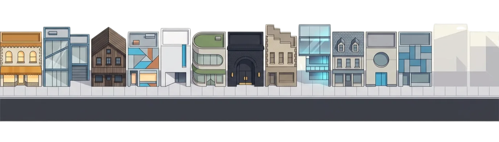
#2 Differentiated — the Key Twist
Homogeneous (Ch 10)
A bushel of wheat from one farm is identical to the next. The firm is a price-taker: demand is flat, \(P = MR\).
Differentiated (Ch 13)
Ciao's wood-fired margherita is not Sal's NY slice. A few regulars stay even if Ciao raises price — demand slopes down, \(P > MR\).
Each firm's product is a close substitute for its rivals' — but not a perfect one. That single fact bends the firm's perceived demand \(P_i^{d}(q_i)\) downward. Everything in §13.2 follows from it.
Notation: we write firm \(i\)'s own demand as \(P_i^{d}(q_i)\) — the price it can charge as a function of its output, holding the rest of the market fixed.
#3 Free Entry & #4 Independence
#3 Free entry & exit
No patents, licenses, or massive capital walls.
Entry: ~300 new craft breweries opened in 2025.
Exit: Allbirds closed every full-price store. This is the force that drives profit to zero (§13.2 long run).
#4 Independent decisions
Each firm is small enough that its choices barely register with rivals.
When one shop runs a special, the other 99 do not hold an emergency meeting. No strategic interaction — the math stays tractable.
Contrast #4 with oligopoly (Part 2), where a few firms watch each other's every move — and we need game theory.
Heads Up — What “Monopolistic” Actually Modifies
The myth
“Monopolistic competition means the market is partly a monopoly.”
The reality
Every firm has a tiny monopoly over its own specific variety — no one else sells the exact same cup as Ciao. But the market is fiercely competitive because close substitutes are everywhere. “Monopolistic” describes the firm's perceived demand curve, not the market's structure.
Superior Location
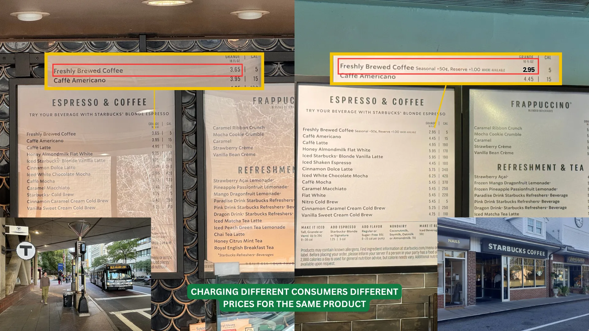
Identical Grande coffee: $3.65 at a captive transit-station store vs $2.95 in the suburbs. A captive audience makes demand less elastic → a bigger markup. Location is differentiation.
Branding & Switching Costs
Brand equity is the power of a name to bend demand and blunt price sensitivity — Interbrand values Apple's brand alone near $470B (2025).
Definition
Switching costs — the time, money, and effort to move to a rival's product. Higher switching costs → less elastic demand → more market power.
Embed in Apple's ecosystem — iPhone, iCloud, Watch, Family Sharing — and each device raises your switching cost. A loyal customer won't jump for a small price gap. The curve steepens.
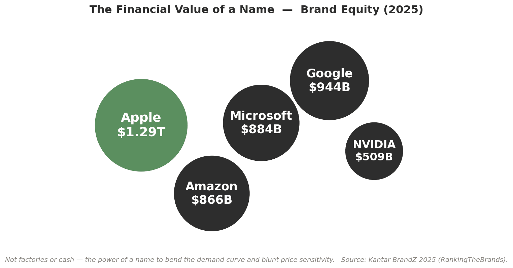
Quality & Craftsmanship
Market Basket
Competes on price — about 15% below average.
Trader Joe's
~4,000 items, 80% private-label exclusives you can't get elsewhere.
Whole Foods
Organic certification and premium presentation.
All three sell groceries. None sells the same product. Each carved a different niche — a different perceived demand curve — on the same shelf. Bespoke tailoring vs off-the-rack is the same story in clothing.
Advertising
Two faces, two effects on the perceived demand curve
Informational
Function: reduces search costs.
Effect: more informed buyers → more elastic demand, more competition. “CRM software, $45/mo — click here.”
Persuasive
Function: alters preferences / builds loyalty.
Effect: less elastic demand, a steeper markup — a new phone when the old one works fine.
Same ad budget, opposite effects on elasticity. The empirical question — does advertising inform or persuade? — has a surprisingly clean answer in the reading (§13.2's advertising discussion).
Advertising as a Signal of Quality
A Super Bowl ad can carry almost no information — yet the willingness to spend is itself the signal.
Ads drive trials; quality drives repeat purchases. Only a firm expecting repeat buyers can recover an expensive ad — so the spend is credible because a low-quality firm couldn't justify it. The spend, not the content, is the message (Nelson).
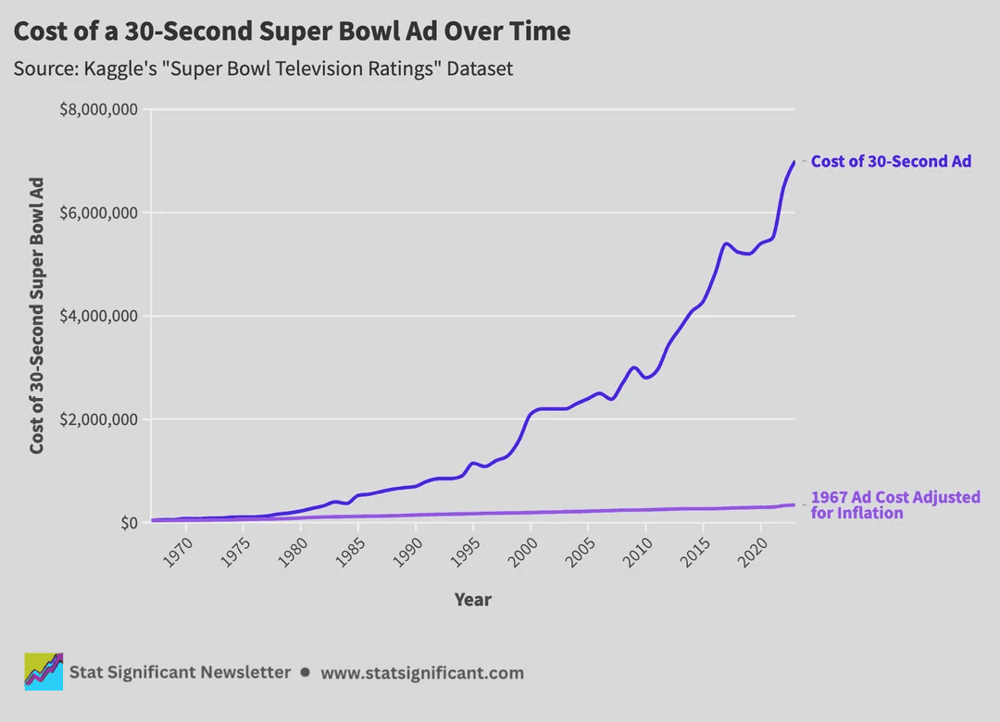
A 30-second Super Bowl ad now runs ~$8M — justified only if the product brings buyers back.
Poll — Why Is the Ad a Credible Signal?
A startup pays $8 million for one Super Bowl ad. In Nelson's framework, why does that credibly signal quality to consumers?
A. It proves the firm is large and well-funded
B. Only a firm expecting repeat buyers can recover $8M — a bad product can't
C. The ad directly lowers the firm's marginal cost
D. Super Bowl ads are pre-screened for quality by the network
Click your answer. Press ↓ for results.
Poll Results
Answer: B. The ad is credible because the cost is only recoverable through repeat purchases — which a low-quality product can't generate. The signal is in what the firm is willing to risk.
A conflates deep pockets with quality; C/D describe mechanisms that don't exist.
The Firm Is a Price-Setter, Not a Price-Taker
Differentiation gives firm \(i\) a downward-sloping perceived demand \(P_i^{d}(q_i)\). It chooses \(q_i\) to maximize
\(\pi_i = P_i^{d}(q_i)\,q_i - C(q_i)\)
1. Some price control. Raise Ciao's price by $1 and a few switch to Sal's — but the regulars stay. Price-setter.
2. \(MR_i < P\). To sell one more unit it cuts price on all units — but demand stays relatively elastic, so the markup is small.
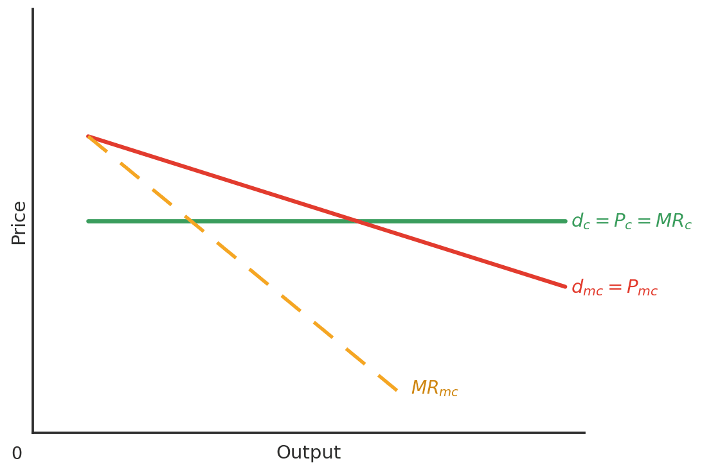
Homogeneous good (Ch 10): flat demand, \(P=MR\). Differentiated good (Ch 13): demand slopes down, \(MR < P\).
Heads Up — monopolistic competition is not “a bit of monopoly” in the market
The monopoly is over the firm’s own variety, not over the market. Market concentration is low, entry is free, and the markup is thin — but it is genuinely positive. Both halves of the name are literally true, at different levels.
The Rule: \(MR_i(q_i) = MC(q_i)\), so \(P > MC\)
1 · Find \(Q^{\ast}\). \(\dfrac{d\pi_i}{dq_i} = MR_i - MC = 0 \Rightarrow MR_i = MC.\) That is where dashed MR cuts the MC check mark.
2 · Read \(P\) off demand. Go up from \(Q^{\ast}\) to D — never to MR. Because \(D\) slopes down, \(MR_i < P\), so \(MC = MR_i < P\): a positive markup, the bracket on the graph.
3 · Read profit off ATC. Compare \(P\) with ATC at \(Q^{\ast}\). Gap \(\times\, Q^{\ast}\) = the shaded box: green profit, red loss, nothing at tangency.
Shapes to expect. ATC is U-shaped — fixed cost spread thin, then diminishing returns. MC is a check mark that pierces ATC exactly at its minimum.
Drag demand or pick a scenario. \(Q^{\ast}\) sits where \(MR = MC\); the box is profit (green) or loss (red). \(P\) stays above \(MC\) in every case.
Entry Erodes Profit, Exit Erases Loss
Profit → entry. New firms enter; each captures some of the existing customer base, shifting every incumbent's perceived demand inward. Stops when profit \(= 0\).
Loss → exit. Firms leave; their customers spread to survivors, shifting demand outward. Stops when losses disappear.
Heads Up — entry moves the firm’s demand curve, not the market price
In perfect competition (Ch 10), entry shifts market supply and the price falls to every firm. Here there is no single market price — entry shifts each incumbent’s perceived demand inward and flatter. Same destination, different channel — the most common Ch 10 → Ch 13 error.
The tangency is an attractor: perturb demand, release, and entry/exit pulls it back to \(P = LRATC\).
The Tangency Condition — Two Things at Once
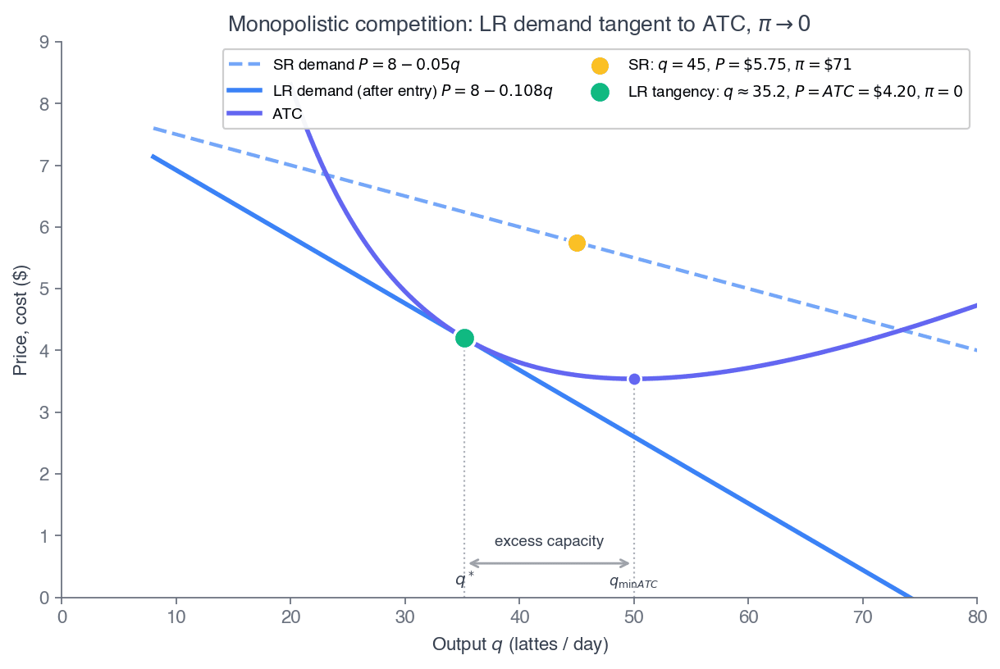
In long-run equilibrium two conditions hold simultaneously:
1. \(MR_i = MC\) — profit is maximized.
2. \(P^{d}(q^{\ast}) = ATC(q^{\ast})\) — economic profit is zero.
Recall from Principles — 1116 §12.3
1116 drew this graphically: perceived demand tangent to ATC, with \(P > MC\) but \(P = ATC\). Today we write tangency as a calculus condition — matched value AND matched slope.
Heads Up — the tangency is not at minimum ATC
That is the perfect-competition long-run result, and it cannot happen here. Perceived demand slopes down; a downward line tangent to a U touches on the falling branch, strictly left of \(\min ATC\). If your diagram shows tangency at the bottom of the U, you have drawn a flat demand curve by accident.
Heads Up — Zero Economic Profit Is Not Breaking Even
The myth
“Zero economic profit means the business is failing.”
The reality
Zero economic profit \(\neq\) zero accounting profit. The firm covers all costs — including the owner's opportunity cost. The owner earns a normal return: exactly what their next-best alternative pays. A stable resting point, not a death sentence.
Application: The Craft-Brewery Contraction in Real Time
2010–2018: US craft breweries roughly quadrupled (~1,800 → ~7,600) on the IPA boom. Per-capita consumption did not keep pace — each brewery's perceived demand was diluted inward.
2025: 9,578 breweries, but 481 closures vs 300 openings — the second straight year closures outnumbered openings. Anchor (1896), Stone, 21st Amendment, Sweetwater all shut facilities 2023–2025.
This is the excess-capacity theorem running in reverse. Too many differentiated producers entered; perceived demand at each brewery's product line collapsed inward past the tangency; margins turned negative for the marginal producer, who exited.
Each closure restores the survivors' perceived demand toward the LR tangency. The 2025 closures-greater-than-openings pattern is the system equilibrating — named firms entering and exiting exactly as the Chamberlin model predicts.
Is It Inefficient? Variety vs. Efficiency
Versus perfect competition, MC looks wasteful: excess capacity and a markup. But perfect competition requires identical products — one coffee, one pizza, one CRM.
The excess capacity and the markup are the price we pay for variety. Whether that price is worth it is a quantitative question, not a foregone conclusion.
Spence (1976) and Dixit–Stiglitz (1977) built the workhorse model of the variety–scale tradeoff; Mankiw–Whinston (1986) showed free entry can yield a socially excessive number of firms (“business stealing”) — yet each entrant also adds a variety. Net welfare: ambiguous.
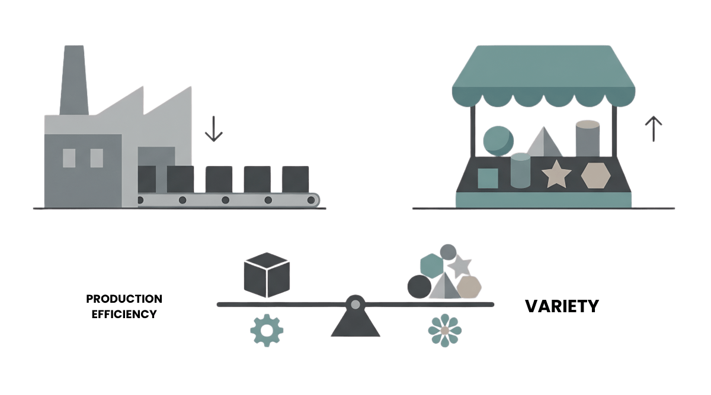
Heads Up — “inefficient” here is a narrower claim than it sounds
Relative to the \(P = MC\), \(\min ATC\) benchmark, monopolistic competition is allocatively and productively inefficient. But that benchmark offers one product. The welfare comparison against a world with less variety is genuinely ambiguous — Spence and Dixit–Stiglitz show entry can be either excessive or insufficient.
Think Like an Economist
Suppose the government mandated a single, standardized note-taking app for all phones — one app, maximum efficiency, lowest possible cost per user.
Would society be better off? What would be lost?
Efficiency would rise — but variety, experimentation, and the match to different users' needs would vanish. That trade-off is monopolistic competition. (60-second turn-and-talk.)
The Four Structures, Side by Side
| Feature | Perfect Comp. | Monop. Comp. | Oligopoly | Monopoly |
|---|---|---|---|---|
| Number of firms | Many | Many | Few | One |
| Product type | Identical | Differentiated | Either | Unique |
| Entry barriers | None | Low | High | Very high |
| Long-run profit | Zero | Zero | Possible | Possible |
| P vs. MC | \(P = MC\) | \(P > MC\) | \(P > MC\) | \(P > MC\) |
| Strategic? | No | No | Yes — Part 2 | No |
MC shares “many firms” and “zero long-run profit” with perfect competition, but “differentiated + \(P>MC\)” with the market-power structures. Dixit–Stiglitz (1977) formalized the welfare gain from variety; Paul Krugman built on it to win the 2008 Nobel.